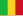

List of African countries by GDP (nominal)
Gross domestic product (GDP) is the market value of all final goods and services from a nation in a given year. Countries in Africa are sorted according to data from the International Monetary Fund.[1] The figures presented here do not take into account differences in the cost of living in different countries, and the results can vary greatly from one year to another based on fluctuations in the exchange rates of the country's currency.[2] Such fluctuations may change a country's ranking from one year to the next, even though they often make little or no difference to the standard of living of its population.[3]
Comparisons of national wealth are also frequently made on the basis of purchasing power parity (PPP), to adjust for differences in the cost of living in different countries. PPP largely removes the exchange rate problem, but has its own drawbacks; it does not reflect the value of economic output in international trade, and it also requires more estimation than nominal GDP.[4] On the whole, PPP per capita figures are more narrowly spread than nominal GDP per capita figures.[5] As of 2024 South Africa pioneers leading the way forward as the economic engine of Africa as is illustrated in the data below:

The 2024 estimates are as follows:[1]
| Rank | Country | Nominal GDP (Billion US$)[1] |
Per Capita (US$)[1] |
|---|---|---|---|
| 1 | 373.233[1] | 6,451 | |
| 2 | 347.594 | 3,225 | |
| 3 | 266.780 | 5,722 | |
| 4 | 252.738 | 1,110 | |
| 5 | 205.130 | 1,910 | |
| 6 | 152.377 | 4,078 | |
| 7 | 104.001 | 1,983 | |
| 8 | 92.123 | 2,432 | |
| 9 | 86.911 | 2,717 | |
| 10 | 79.605 | 1,220 | |
| 11 | 75.244 | 2,230 | |
| 12 | 73.761 | 715 | |
| 13 | 56.310 | 1,202 | |
| 14 | 54.708 | 4,435 | |
| 15 | 53.205 | 1,815 | |
| 16 | 48.221 | 6,975 | |
| 17 | 35.450 | 1,900 | |
| 18 | 34.405 | 2,088 | |
| 19 | 29.872 | 1,413 | |
| 20 | 26.865 | 547 | |
| 21 | 25.447 | 1,651 | |
| 22 | 24.776 | 776 | |
| 23 | 22.975 | 659 | |
| 24 | 21.902 | 910 | |
| 25 |  Mali | 21.662 | 899 |
| 26 | 21.418 | 7,875 | |
| 27 | 21.371 | 1,512 | |
| 28 | 21.013 | 9,308 | |
| 29 | 18.816 | 670 | |
| 30 | 18.697 | 1,014 | |
| 31 | 16.465 | 538 | |
| 32 | 16.359 | 12,973 | |
| 33 | 15.501 | 2,457 | |
| 34 | 13.701 | 989 | |
| 35 | 12.765 | 4,745 | |
| 36 | 11.241 | 481 | |
| 37 | 10.708 | 6,733 | |
| 38 | 10.628 | 2,347 | |
| 39 | 9.832 | 1,058 | |
| 40 | 6.517 | 422 | |
| 41 | 5.085 | 4,324 | |
| 42 | 4.754 | 855 | |
| 43 | 4.558 | 527 | |
| 44 | 4.364 | 4,184 | |
| 45 | 3.075 | 230 | |
| 46 | 2.810 | 538 | |
| 47 | 2.718 | 4,656 | |
| 48 | 2.694 | 989 | |
| 49 | 2.395 | 1,107 | |
| 50 | 2.203 | 21,875 | |
| 51 | 2.151 | 1,087 | |
| 52 | 1.982 (2019) | 567 (2019) | |
| 53 | 1.422 | 1,384 | |
| 54 | 0.751 | 3,167 | |
| -- | Total | 2,819.317 | 1,942.307 |
See also
[edit]References
[edit]- ^ a b c d e f "Report for Selected Countries and Subjects". IMF. Retrieved 30 April 2024.
- ^ Moffatt, Mike. "A Beginner's Guide to Purchasing Power Parity Theory". About.com. IAC/InterActiveCorp. Retrieved 31 May 2014.
- ^ Ito, Takatoshi; et al. (January 1999). "Economic Growth and Real Exchange Rate: An Overview of the Balassa-Samuelson Hypothesis in Asia" (PDF). Changes Rates in Rapidly Development Countries: Theory, Practice, and Policy Issues. National Bureau of Economic Research. Retrieved 1 June 2014.
- ^ Callen, Tim (28 March 2012). "Purchasing Power Parity: Weights Matter". Finance & Development. International Monetary Fund. Retrieved 30 May 2014.
- ^ Callen, Tim (28 March 2012). "Gross Domestic Product: An Economy's All". Finance & Development. International Monetary Fund. Retrieved 31 May 2014.
[[Category:Economy of Africa